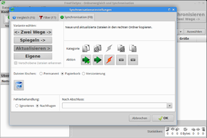

FreeFileSync
Dieser Artikel wurde für die folgenden Ubuntu-Versionen getestet:
Ubuntu 14.04 Trusty Tahr
Zum Verständnis dieses Artikels sind folgende Seiten hilfreich:
FreeFileSync  ist ein freies Programm zur Synchronisation (Datenabgleich) von zwei Partitionen oder Verzeichnissen. Es ist mit identischer graphischer Oberfläche für verschiedene Plattformen (Linux, Windows) verfügbar.
ist ein freies Programm zur Synchronisation (Datenabgleich) von zwei Partitionen oder Verzeichnissen. Es ist mit identischer graphischer Oberfläche für verschiedene Plattformen (Linux, Windows) verfügbar.
Vorzüge von FreeFileSync sind die konsequente Beschränkung auf das Wesentliche, die sehr übersichtlich gestaltete Oberfläche und die besonders einfache, intuitive Bedienung. So eignet sich FreeFileSync vor allem für den persönlichen Bereich, wenn ohne großen Aufwand schnell ein paar Ordner zu synchronisieren sind. Aber auch große Datenmengen lassen sich mit FreeFileSync problemlos synchronisieren, wenn es im Falle der Übertragung über ein Netzwerk nicht auf eine besonders hohe Geschwindigkeit ankommt. FreeFileSync kennt keine Begrenzung von Größe oder Anzahl von Dateien. Für die Administration größerer Netzwerke und für professionelle Anwendungen ist FreeFileSync jedoch weder nach Funktionsumfang noch nach Performance mit rsync oder Unison vergleichbar. Eine Übersicht über die Eigenschaften von FreeFileSync findet sich auf der Projektseite .
Eine Besonderheit ist das bei FreeFileSync mitgelieferte eigenständige Programm RealtimeSync, mit dem sich Dateien, Ordner oder Partitionen im Hintergrund ständig auf Veränderungen hin beobachten lassen. Man kann dann automatisch bestimmte Aufgaben wie z.B. eine Synchronisation ausführen lassen.
Ein mit FreeFileSync vergleichbares Programm, aber mit deutlich größerem Funktionsumfang ist Synkron. Speziell zur automatischen Erstellung von Sicherungskopien von Systemkonfiguration und Benutzerdaten eignet sich auch sbackup.
Installation¶
FreeFileSync ist nicht in den offiziellen Paketquellen enthalten, kann aber aus eine Fremdquelle via GetDeb installiert werden: freefilesync
Hinweis!
Zusätzliche Fremdquellen können das System gefährden.
Nach der Installation sollte die GetDeb-Fremdquelle wieder deaktiviert werden, da in dieser noch weitere Programme enthalten sind und somit andere, bereits auf dem PC installierte Programme ebenfalls aktualisiert werden.
Kompilierte Binärdatei¶
Die neueste Linux-Version von FreeFileSync kann für 64-Bit-Systeme (x64) fertig kompiliert von der Projektseite  heruntergeladen werden. Diese gibt es nur für aktuelle Ubuntu-Versionen und ist am Dateinamen zuerkennen.
heruntergeladen werden. Diese gibt es nur für aktuelle Ubuntu-Versionen und ist am Dateinamen zuerkennen.
FreeFileSync wird dabei im strengen Sinne nicht wirklich installiert. Es genügt vielmehr, das tar.gz-Archiv (z.B. FreeFileSync_7.5_Ubuntu_15.04_64-bit.tar.gz) in ein beliebiges Verzeichnis eigener Wahl zu entpacken[3]. Dort kann die ausführbare Binärdatei FreeFileSync gestartet[4] werden. Entsprechendes gilt auch für das eigenständige Programm RealtimeSync, das zusammen mit FreeFileSync im gleichen Archiv enthalten ist. Wünscht man Programmeinträge im Menü, so muss man sich diese selbst einrichten[4].
Hinweis!
Fremdsoftware kann das System gefährden.
| Startoberfläche von FreeFileSync |
Quellcode kompilieren¶
Der Quellcode steht auf der Projektseite in einem Zip-Archiv zur Verfügung.
Portable Einrichtung¶
Weil FreeFileSync keine wirkliche Installation benötigt, kann das tar.gz-Archiv auch in einen Ordner auf einem externen Datenträger (z.B. USB-Stick) entpacken und die ausführbaren Binärdateien direkt dort aufrufen. Dabei werden keinerlei Veränderungen am System vorgenommen; es handelt sich also um eine echte portable Einrichtung. Die ebenfalls portable Windows-Version von FreeFileSync läuft auch problemlos mit Wine.
Startet das Programm nicht, so sollte es ausführbar gemacht und überprüft werden, ob alle benötigten Bibliotheken vorhanden sind. Am besten geht dies, wenn das Programm im Terminal unter
/Pfad zum Programmordner/ ./FreeFileSync
ausgeführt wird.
Anwendung¶
Abgleichen¶
FreeFileSync kann Dateien auf zwei Arten miteinander abgleichen:
nach Datum und Dateilänge
nach dem Dateiinhalt
Außerdem kann man festlegen, wie mit symbolischen Links (Symlinks) verfahren werden soll. FreeFileSync kann diese ignorieren, sie direkt vergleichen oder auch ihnen folgen. Der Vergleich nach Dateiinhalt ist langsam und eignet sich deshalb vor allem für Konsistenzprüfungen und weniger für Backup und Datensicherung.
|  |
| Synchronisationseinstellungen von FreeFileSync |
Synchronisieren¶
Für die Synchronisation bietet FreeFileSync drei Vorgehensweisen an:
"<- Zwei Wege ->": Hier erfolgt die Synchronisation bidirektional, d.h. die jeweils neuere Datei wird für beide Seiten übernommen. Konflikte (auf beiden Seiten veränderte Dateien oder verschiedene Dateilängen, aber gleicher Zeitstempel) und Löschungen werden automatisch erkannt.
"Spiegeln ->>": Hierbei wird das linke Verzeichnis komplett auf das rechte übertragen. Dabei werden Dateien im rechten Verzeichnis auch dann überschrieben, wenn sie neuer sind als die gleichnamigen Dateien im linken Verzeichnis. Dateien, die links nicht vorhanden sind, werden rechts gelöscht.
"Aktualisieren ->": Auch hier werden Dateien grundsätzlich nur von links nach rechts kopiert. Im Gegensatz zum Spiegeln werden Dateien aber nur dann übertragen, wenn sie neu oder aktueller sind als die rechts vorhandenen. Dateien, die links nicht vorhanden oder älter sind, bleiben rechts unverändert erhalten.
"Eigene": Hier kann man eigene Synchronisationsregeln einstellen.
Die Synchronisationsart kann generell oder auch für einzelne Verzeichnispaare festgelegt werden. Überschriebene oder entfernte Dateien können wahlweise gelöscht oder in den Papierkorb bzw. in einen beliebigen Ordner eigener Wahl verschoben werden.
Des Weiteren kann eingestellt werden, wie FreeFileSync verfahren soll, wenn ein Fehler vorliegt (z.B. eine Datei/Verzeichnis nicht synchronisiert werden kann oder nicht genügend Speicherplatz vorhanden ist) und ob eine Aktion nach Beendigung der Synchronisation erfolgen soll. Während des nun folgenden Synchronisationsprozesses wird ein Aktivitätenfenster (Verlaufsdialog) für den aktuellen Stand der Synchronisation angezeigt.
| Filtereinstellungen von FreeFileSync |
Filter¶
Über die Filter-Funktion können Dateien in den Vergleich bzw. die Synchronisation einbezogen oder aber von dieser ausgeschlossen werden. Die Filterung erfolgt ausschließlich über den Dateinamen bzw. Zugriffspfad. Neben Dateiendungen (Suffixen) können z.B. auch Ordnernamen als Kriterium gelten. Wildcards sind möglich. Auch Filter können sowohl generell als auch für einzelne Verzeichnispaare festgelegt werden.
Globale und lokale Einstellungen¶
Außer dem Vergleichsmodus, dem Synchronisationsmodus und den Filtern können noch einige weitere Parameter global eingestellt werden. Wichtig ist z.B. das Verhalten bei symbolischen Verknüpfungen. Im Fall von Platzmangel ist die Einstellung "Löschen vor Kopieren" nützlich. Manche Einstellungen lassen sich außerdem auch lokal für einzelne Verzeichnispaare vornehmen. Solche lokale Einstellungen überdecken dann die entsprechende globale Einstellung.
Die jeweiligen Grundeinstellungen befinden sich in der Datei Globalsettings.xml. Die vom Benutzer vorgenommenen Einstellungen können in einer Textdatei mit dem Suffix ffs_gui abgelegt und aus dieser wieder geladen werden. Der Aufbau dieser Datei ist leicht verständlich. Erfahrene Anwender können sie deshalb auch in einem Editor[6] von Hand bearbeiten.
Netzwerk¶
Synchronisationen über ein Netzwerk kann FreeFileSync dann durchführen, wenn die jeweiligen Verzeichnisse (Netzwerk-Freigaben) ins lokale Netzwerk eingebunden ("gemountet") sind. Je nach Netzwerk-Dienst (FTP, SFTP, WebDAV, Samba, NFS usw.) ist dies auf verschiedene Arten möglich. Mit der von GIO/GVFS bzw. KIO standardmäßig verwendeten Syntax (ftp://..., smb://... usw.) kommt FreeFileSync allerdings nicht zurecht. Hier ist statt dessen der alternative Zugriff mittels FUSE zu verwenden (siehe dazu gvfs-mount).
| Batchauftrageinstellungen von FreeFileSync |
Batch-Job¶
Wählt man im Menü des Hauptfensters "Datei -> Speichern als Batchauftrag", so öffnet sich ein kleines Fenster zum Erstellen von Batchdateien für die automatische Synchronisation ("Batch-Jobs"). Dieses ist selbsterklärend und verwendet die gleichen Symbole wie das Hauptfenster. Auch in der Batchdatei kann für jedes Verzeichnispaar einzeln festgelegt werden, welche Filter zur Anwendung kommen.
Batch-Jobs werden in Textdateien mit dem Suffix ffs_batch abgelegt und aus diesen zur weiteren Bearbeitung wieder geladen werden. Die Batchdatei ist ganz ähnlich aufgebaut wie die Konfigurations-Datei (*.ffs_gui); es ist darin nur der Abschnitt <GuiConfig> durch den Abschnitt <BatchConfig> ersetzt.
Aufruf über die Kommandozeile¶
FreeFileSync kann auch mit einer Kommandozeile[7] gestartet werden. Dabei kann entweder eine Konfigurationsdatei *.ffs_gui oder eine Batchdatei *.ffs_batch als Parameter übergeben werden. Im ersten Falle startet FreeFileSync eine GUI mit den entsprechenden Einstellungen und führt sofort den Vergleich durch. Im zweiten Falle wird der Batch-Job wahlweise mit oder ohne Anzeige in der GUI abgearbeitet. Im Modus ohne Anzeige ("Stiller Modus") wird in einem Verzeichnis eigener Wahl kann ein Protokoll (Logdatei) erstellt werden.
# Beispiel (bitte Großbuchstaben beachten): FreeFileSync Photos.ffs_batch
Den Aufruf mit Kommandozeile wird man vor allem dann verwenden, wenn man Synchronisationen zeitgesteuert als Cronjob oder eventgesteuert mittels RealtimeSync automatisieren möchte.
Hinweis:
Soll FreeFileSync über die Kommandozeile oder automatisch gestartet werden, empfiehlt es sich, beim Erstellen des Batch-Jobs die Option "Fortschritts-Dialog zeigen" zu deaktivieren und für die Fehlerbehandlung eine der Optionen "Ignorieren" oder "Beenden" zu wählen. FreeFileSync läuft dann im "Stillen Modus", und die Ausführung wird nicht durch Popup-Fenster unterbrochen.
 |
| RealTimeSync von FreeFileSync |
RealtimeSync¶
Mit zum Lieferumfang von FreeFileSync gehört auch das eigenständige kleine Programm RealtimeSync. Es läuft im Hintergrund und überwacht eine beliebige Anzahl von Programmen oder Ordnern. Treten an diesen irgendwelche Veränderungen auf, wird eine vom Benutzer eingegebene Kommandozeile ausgeführt. RealtimeSync ermöglicht es, als Alternative zum sonst üblichen zeitgesteuerten Backup eine Art automatisches, eventgesteuertes Backup vorzunehmen. Dafür kann, muss aber nicht, FreeFileSync verwendet werden. Auch andere über eine Kommandozeile bedienbare Synchronisationsprogramme sind möglich. Um zu häufige Synchronisationen zu verhindern, kann eine Ruhezeit festgelegt werden.
Die Möglichkeiten von RealtimeSync beschränken sich nicht auf Synchronisation und Backup. So kann man damit z.B. auch beliebige Anwendungsprogramme oder Skripte automatisch ausführen, sobald ein bestimmter externer Datenträger (USB-Stick, DVB-T-Stick) eingesteckt wird.
Wird RealtimeSync über eine Kommandozeile aufgerufen, so kann man den auszuführenden Befehl als Parameter übergeben. Dann werden die beim letzten Aufruf verwendeten Einstellungen wieder angewandt. Man kann aber auch eine komplette Konfiguration (*.ffs_real) oder eine Batch-Datei (*.ffs_batch) übergeben. Diese wird dann automatisch in *.ffs_real konvertiert (d.h. es wird eine ffs_real-Datei erzeugt, die die zu überwachenden Verzeichnisse aus der Datei *.ffs_batch extrahiert und die Datei *.ffs_batch als auszuführende Aktion referenziert. Wird RealtimeSync mit einem Parameter aufgerufen, dann wird es sofort ohne Dialogfenster gestartet.
# Beispiel: RealtimeSync Dokumente.ffs_real
RealtimeSync kann in den Autostart eingebunden werden: Dazu sollten die Autostart Programme im Terminal mit
gnome-session-properties
aufgerufen werden.
Als Pfad für RealtimeSync ist
/Pfad zu Ordner/RealTimeSync '/Pfad zu Ordner/irgendwas.ffs_real'
anzugeben
Anleitung und Dokumentation¶
Über "Hilfe -> Inhalt" gelangt man vom Hauptfenster aus zu einem Hilfefenster in englischer Sprache. Im rechten Teilfenster erscheint dann eine Kurzanleitung, die wegen ihrer guten Bebilderung auch ohne besondere englische Sprachkenntnisse verständlich ist. Für viele Fälle dürfte diese ausreichen. Auf eine wesentlich ausführliche Dokumentation (ebenfalls Englisch) ohne Bilder, aber mit Beispielen, kann man im linken Teilfenster zugreifen. Leider liegt bisher noch keine entsprechende Dokumentation in deutscher Sprache vor.
Problembehebung¶
Veränderter Zeitstempel¶
Beim Kopieren von Ordnern oder Dateien über ein Netzwerk (FTP, SFTP, Samba usw.) und beim Kopieren von Linux-Dateisystemen auf Windows-Dateisysteme (VFAT, NTFS) kann es sein, dass der Zeitstempel (Datum und Uhrzeit) verändert wird. Werden die Ordner oder Dateien über ihren Zeitstempel verglichen, so werden in diesem Fall fälschlicherweise auch völlig identische Dateien als unterschiedlich erkannt. Dies kann einen Backup-Vorgang unerträglich verzögern.
Der Vergleich über den Zeitstempel lässt sich dadurch entschärfen oder ganz deaktivieren, dass man in der Datei GlobalSettings.xml für <FileTimeTolerance> (Zeit-Toleranz in Sekunden) einen sehr hohen Wert einträgt. Veränderte Dateien werden dann als "Konflikt" angezeigt und die Standard-Richtung für die Synchronisation im Konfliktfall kann verwendet werden.
Alternativ lässt sich das Problem auch über die Einbindung des Laufwerks lösen: Bei der Einbindung muss
1 | uid=benutzernameubuntu,forceuid |
ergänzt werden.
Vergleich mehrerer Verzeichnisse¶
FreeFileSync kann Dateien immer nur paarweise miteinander vergleichen. Mehrfach-Vergleiche, wie z.B. in Synkron möglich, sind nicht vorgesehen. FreeFileSync verfügt jedoch über ein wirksames "File Locking", sodass z.B. in einem Netzwerk mehrfache Synchronisationen mit einer gemeinsamen Backup-Datei oder die Bearbeitung von Dateien während eines Backup-Vorgangs möglich sein sollten.
Links¶
Intern¶
Datensicherung
 Übersicht über die möglichen Methoden und Programme
Übersicht über die möglichen Methoden und ProgrammeAlternativen:
Synkron - Alternative zu FreeFileSync mit größerem Funktionsumfang
rsync - Das mächtige Standard-Werkzeug von Linux zur unidirektionalen Synchronisation und Datensicherung. Arbeitet durch inkrementelle Synchronisation und optionale Kompression in Netzwerken sehr schnell.
Unison - Ausgereiftes grafisches Werkzeug zur bidirektionalen Synchronisation (verwendet den rsync-Algorithmus)
sbackup - Werkzeug speziell zur automatischen Erstellung von komprimierten Sicherungskopien von Systemkonfiguration und Benutzerdaten
- Erstellt mit Inyoka
-
 2004 – 2017 ubuntuusers.de • Einige Rechte vorbehalten
2004 – 2017 ubuntuusers.de • Einige Rechte vorbehalten
Lizenz • Kontakt • Datenschutz • Impressum • Serverstatus -
Serverhousing gespendet von